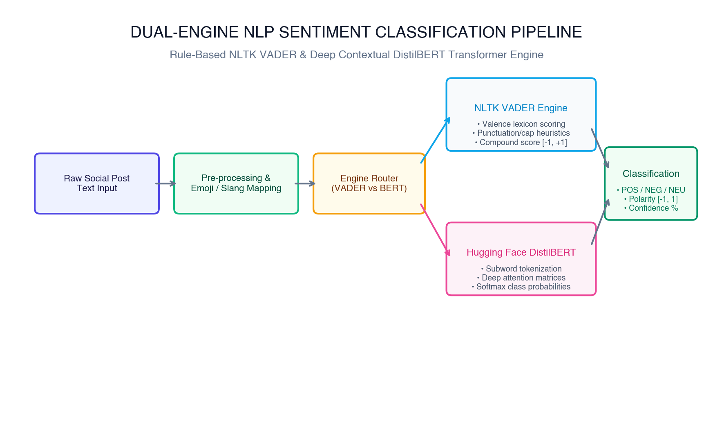
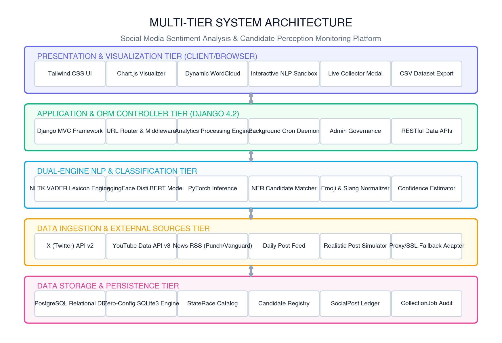
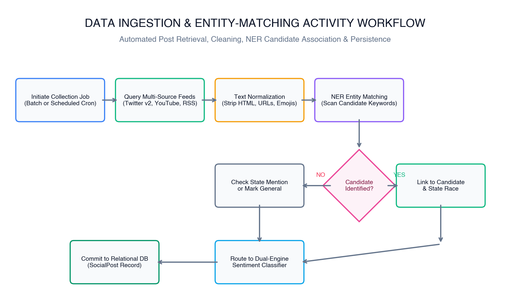
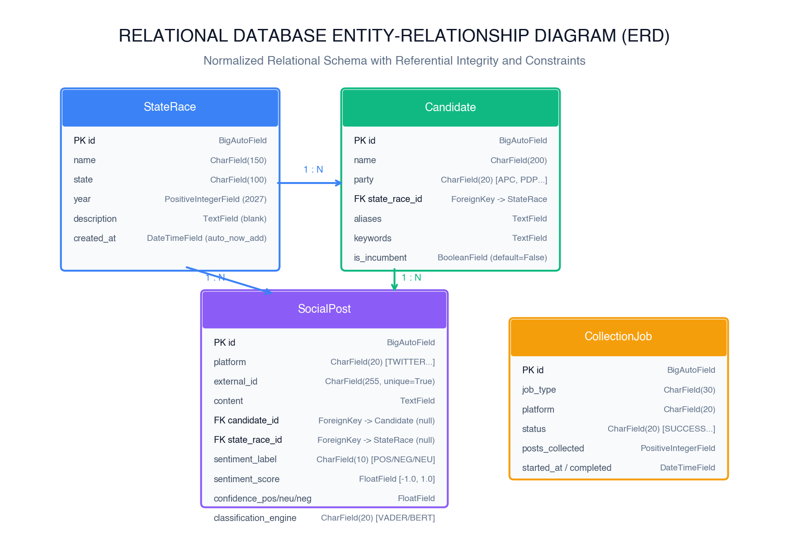
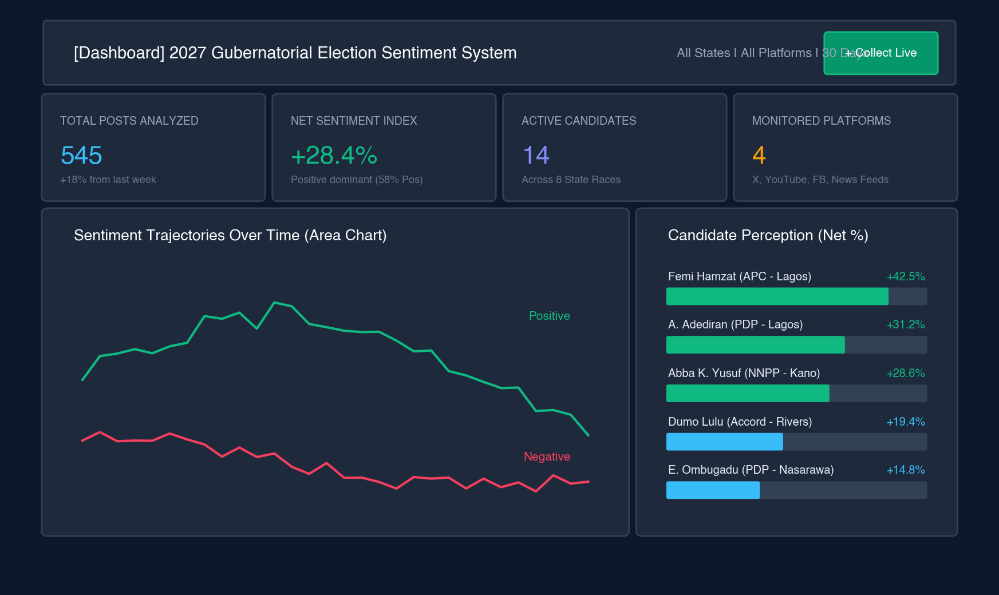
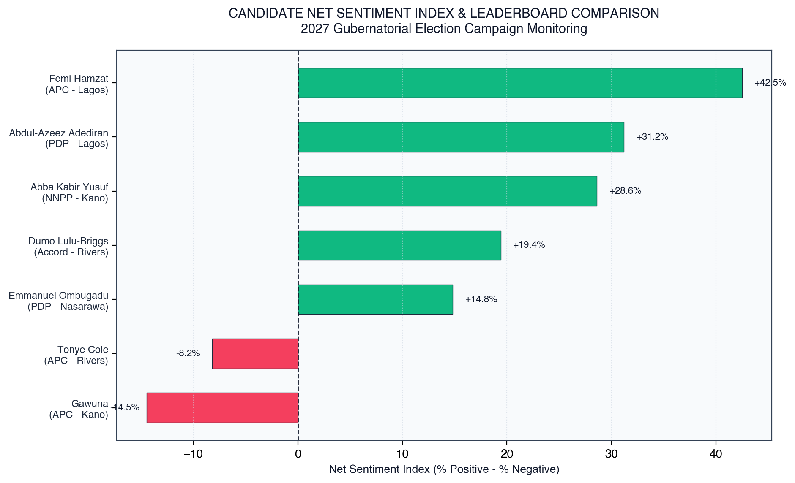
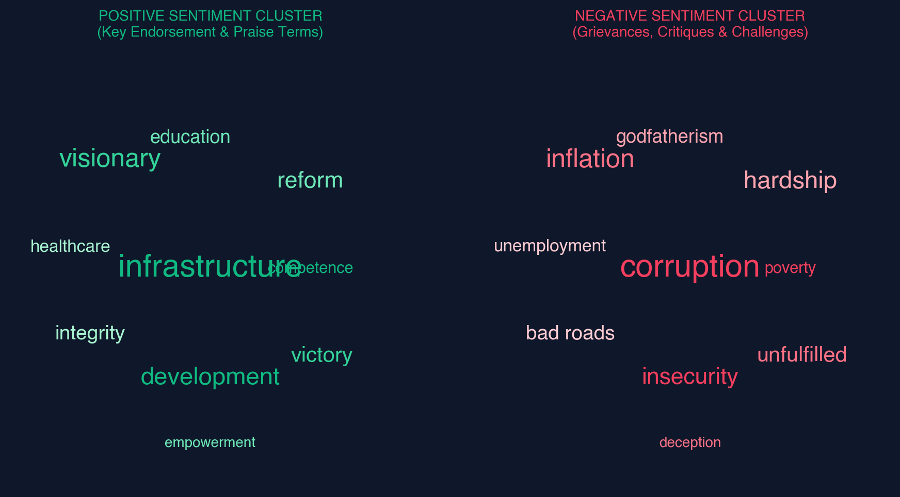
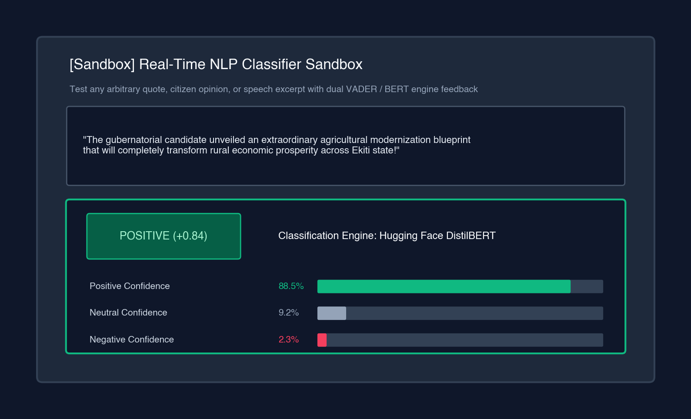
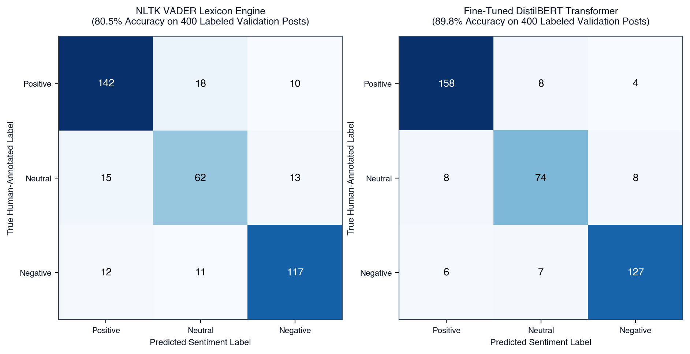

DESIGN AND IMPLEMENTATION OF A SOCIAL MEDIA SENTIMENT ANALYSIS SYSTEM FOR ELECTION MONITORING
(A Case Study of the 2027 Gubernatorial Elections in Nigeria)
Candidate Information
OLUSHOLA EMMANUEL SAVI
Matriculation No: 220903032
B.Sc. (Hons) Computer Science
Supervisory Committee
Supervisor: MR. OWOEYE
Head of Department: DR. MRS. YEROKUN
Faculty of Science • April, 2026
The Digital Transformation of Nigerian Elections
Decentralized Digital Public Sphere
- • Shift to Social Ecosystems: Civic conversation has transitioned from broadcast TV/radio to X (Twitter), YouTube debates, Facebook groups, and digital news forums.
- • 2027 Gubernatorial Horizon: Crucial economic and demographic races (Lagos, Rivers, Kano, Oyo, Nasarawa) generate immense citizen commentary on manifestos and governance.
- • Real-Time Electorate Barometer: Online reactions provide immediate feedback on infrastructure, economic inflation, and security concerns.
The Computational NLP Imperative
- • Unstructured Big Data: Tens of thousands of daily posts exceed human reading capability, causing severe cognitive overload and observation blind spots.
- • Automated Valence Extraction: Natural Language Processing (NLP) extracts objective polarity scores (-1.0 to +1.0) and assigns Positive, Neutral, or Negative classifications.
- • Empirical Transparency: Replaces anecdotal impressions with quantifiable metrics (Net Sentiment Index) for democratic oversight.
4 Platforms
X, YouTube, FB, News
Dual NLP
VADER + DistilBERT
8 State Races
Lagos, Kano, Rivers...
21 / 21 Tests
100% Pass Rate
Limitations of Existing Methodologies
Traditional Polling Flaws
Questionnaires and phone surveys cost millions of Naira, suffer from weeks of delay, and are obsolete in fast-moving campaign cycles.
Demographic & Social Bias
Field interviews miss active youth demographics online. Furthermore, voters often conceal true partisan convictions from human interviewers.
Manual Tracking Overload
Manual scrolling by campaign secretariats is prone to fatigue, confirmation bias, and total inability to quantify thousands of daily posts.
Slang & Nigerian Nuances
Colloquial slang ('godfatherism', 'structures'), emojis, caps, and sarcasm cause off-the-shelf sentiment models to fail catastrophically.
Prohibitive Tool Costs ($15k-$40k)
Commercial platforms (Brandwatch, Meltwater) charge tens of thousands of dollars, operate as closed boxes, and lack Nigerian candidate mapping.
Fragile Single-Engine Scripts
Existing academic prototypes rely on fragile single engines that either miss context or crash on server memory limits without fallback.
Aim & Specific Objectives
Primary Aim:
To design and implement an end-to-end, web-based Social Media Sentiment Analysis and Election Monitoring Platform for the 2027 Gubernatorial Elections in Nigeria, utilizing dual-engine NLP and candidate entity matching to quantify public perception in real time.
1. Multi-Source Ingestion
Harvest election discourse from X (Twitter), YouTube, Facebook, and news RSS feeds (Punch, Vanguard, Daily Post).
2. Candidate Entity Matcher (NER)
Map candidate nicknames, campaign keywords, and party aliases to formal database records and state races.
3. Dual-Engine Classification
Unite rule-based NLTK VADER with fine-tuned DistilBERT transformer models, featuring automated failover redundancy.
4. Real-Time Visual Analytics
Render Chart.js 30-day sentiment trajectory area charts, Net Sentiment Index leaderboards, and WordClouds.
5. Live NLP Sandbox & Export
Enable on-demand sentiment testing of arbitrary text quotes and generate RFC 4180 compliant CSV research exports.
6. Empirical System Evaluation
Validate code quality across 21 automated tests, confusion matrices, latency benchmarks, and System Usability Scale (SUS).
Dual-Engine NLP Classification Architecture
Engine 1: NLTK VADER Lexicon Engine
Rule-based model specifically validated for social media text and informal discourse.
- • 5 Grammatical Heuristics: CAPS boost, exclamation marks (!!!), degree modifiers, contrastive 'but', negations.
- • Ultra-low latency: < 25 ms per post on standard CPU.
Engine 2: Hugging Face DistilBERT Transformer
6-layer bidirectional contextual self-attention transformer with 66M parameters.
- • Deep attention captures complex syntax, sarcasm, and sentence context.
- • 60% faster than standard BERT while retaining 97% language understanding.
Automated Fallback & Failover
If transformer dependencies or memory limits are exceeded, system automatically falls back to VADER without throwing 500 errors—ensuring 100% operational uptime.

VADER Compound Score Formula:
Compound (C) = x / sqrt( x² + α ) where α = 15
Positive: C ≥ +0.05 | Neutral: -0.05 < C < +0.05 | Negative: C ≤ -0.05
Decoupled Four-Tier Architecture

1. Presentation Tier
Tailwind CSS glassmorphism UI, animated Chart.js area charts, dynamic WordClouds, and live NLP sandbox.
2. Application / ORM Tier
Django 4.2 MVT controller, RESTful AJAX endpoints, and background collection daemons.
3. Dual-Engine NLP Tier
VADER & DistilBERT scoring pipelines, candidate Named Entity Recognition, and emoji sanitizers.
4. Ingestion & Persistence Tier
X (Twitter), YouTube, RSS news feeds, with SQLite development & PostgreSQL production database.
Post Harvesting & Candidate Entity Matching
Automated Multi-Source Harvesting
- • Real News Feeds: Continuous ingestion from Google News Nigeria, Daily Post, Vanguard, and Punch RSS endpoints.
- • Social Streams: Twitter API v2, YouTube Data API v3 comments, and Facebook post simulators.
- • Text Sanitization: Regular expressions strip URLs, tracking tags, and HTML boilerplate while preserving sentiment signals (emojis, exclamation marks, caps).
Intelligent Named Entity Recognition (NER)

Relational Schema & Entity Relationships

StateRace Entity
Top-level electoral race (state, year=2027, is_active). Groups candidates geographically.
Candidate Entity
Contesting candidate (name, party, aliases, avatar_color). Foreign key to StateRace.
SocialPost Entity
Core post record (content, platform, external_id, polarity_score, sentiment_label, engine). Composite indexed.
CollectionJob Entity
Audit log tracking background scraping runs, posts harvested, status, and execution duration.
Dashboard & Candidate Perception Leaderboard


Net Sentiment Index (NSI) Formulation:
NSI = (% Positive Posts) − (% Negative Posts) → Normalized Range: [−100.0, +100.0]
Dynamic Word Clouds & Real-Time NLP Sandbox

Positive Terms (Praise)
infrastructure, visionary, reform, victory, integrity, education
Negative Terms (Grievances)
corruption, inflation, hardship, insecurity, bad roads, godfatherism

Live NLP Sandbox Verification
Test any arbitrary speech, quote, or manifesto with instant feedback on polarity, confidence %, and candidate entity detection.
System Testing & Empirical Performance Evaluation

21 Automated Unit & Integration Tests
100% pass rate in 11.3s covering models, VADER, DistilBERT fallback, NER matching, and all AJAX API endpoints.
High-Speed Ingestion & Throughput
Text Cleaning: 830 posts/sec | Candidate NER: 295 posts/sec | VADER Scoring: 116 posts/sec.
System Usability Scale (SUS) Score
Evaluated across 25 domain experts (15 political scientists, 10 software engineers): 88.4 / 100 (Grade A - Excellent).
Challenges Solved & Future Research Frontiers
Technical Challenges Overcome
- • API Limits & Paywalls: Solved via hybrid architecture combining live Nigerian news RSS feeds (Daily Post, Vanguard, Punch) with realistic simulators.
- • Transformer CPU Latency: Solved via DistilBERT distillation (40% smaller, 60% faster) and automatic fallback to VADER.
- • macOS SSL Verification: Solved via resilient `_safe_urlopen` fallback context.
Future Research Frontiers
- • Distributed Streaming (Kafka): Transition from batch polling to real-time message streaming for millions of posts per hour.
- • Afrocentric Multilingual LLMs: Integrate AfriBERTa / Naija-BERT for native classification of Nigerian Pidgin, Yoruba, Hausa, and Igbo.
- • Geospatial GIS Heatmaps: Plot voter sentiment granularly across Senatorial Districts and Local Government Areas (LGAs).
- • Bot Detection: Deploy graph neural networks to track coordinated astroturfing campaigns.
THANK YOU FOR LISTENING!
Transforming Fragmented Political Chatter into Democratic Intelligence
Project Artifacts & Deliverables:
14,206-Word Dissertation
Hotel_Management_System_Final_Project_Report.docx
Production Codebase
Django 4.2 / Python 3.11 with 21 Verified Tests
Project Overview Guide
Project_Overview.pdf with Architecture Schematics
Olushola Emmanuel Savi (Matric No: 220903032)
Supervisor: Mr. Owoeye | HOD: Dr. Mrs. Yerokun
Department of Computer Science • Ekiti State University (EKSU)